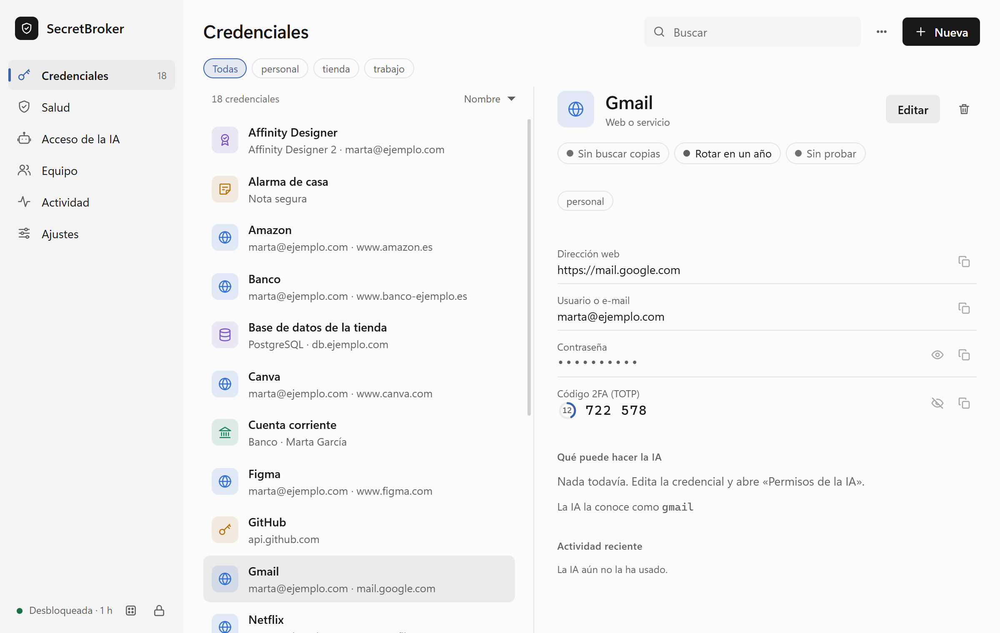
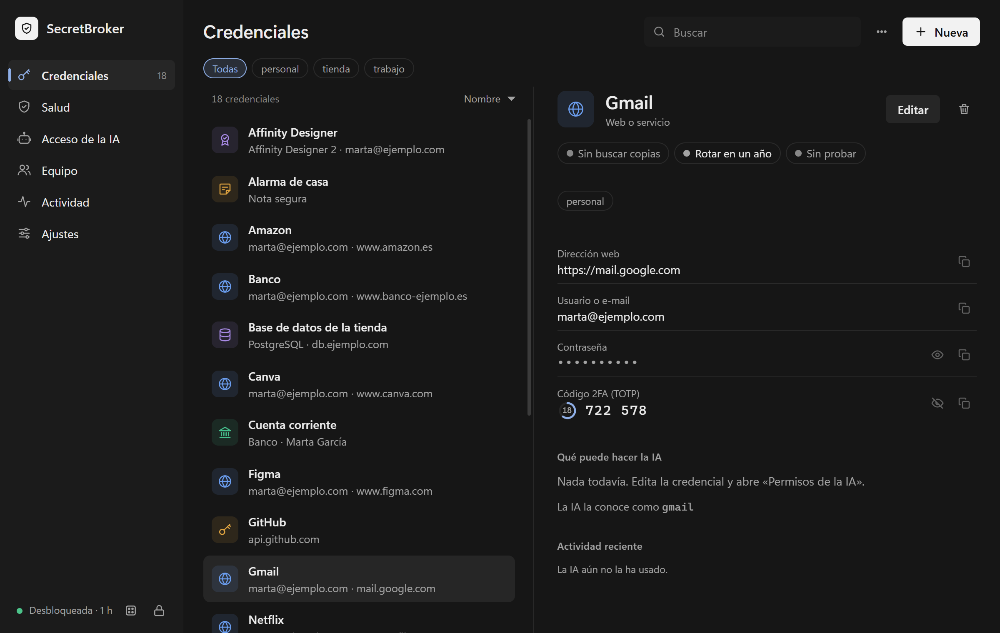
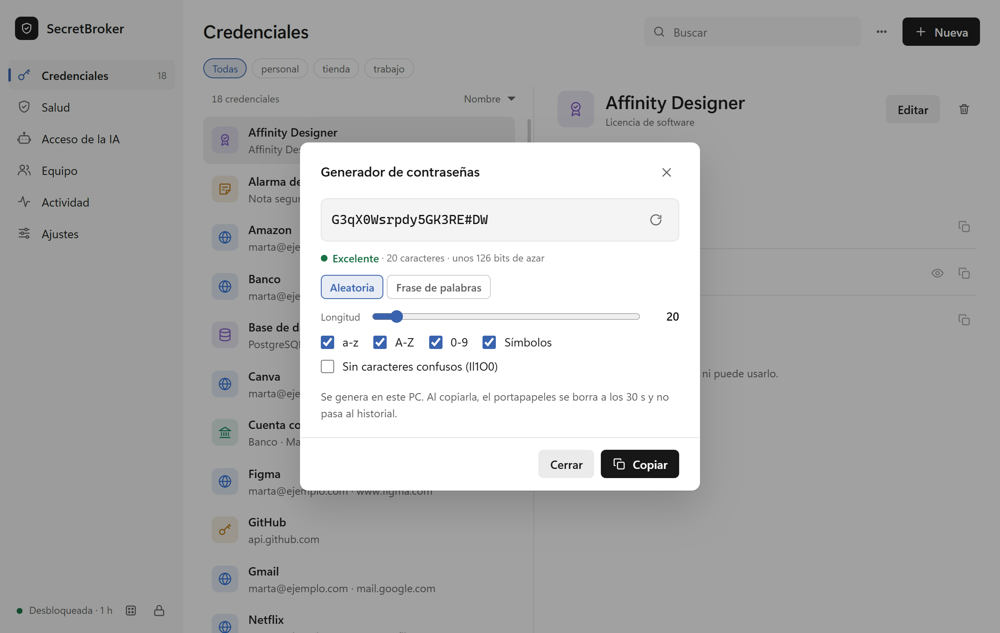
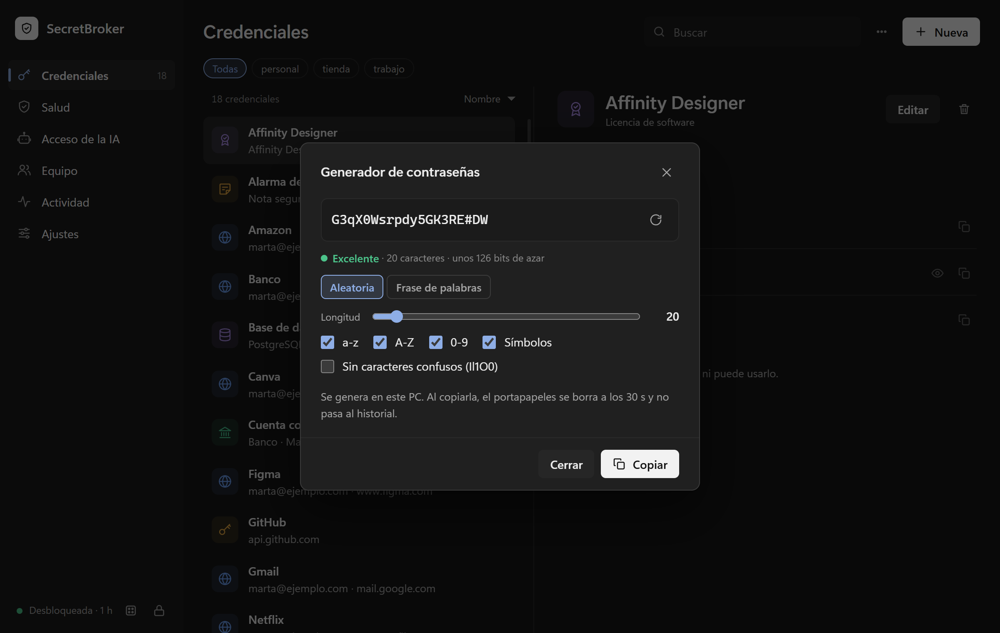
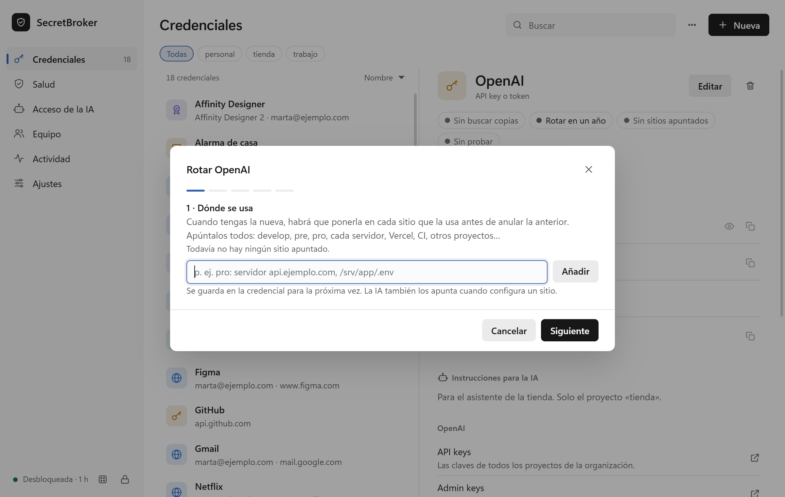
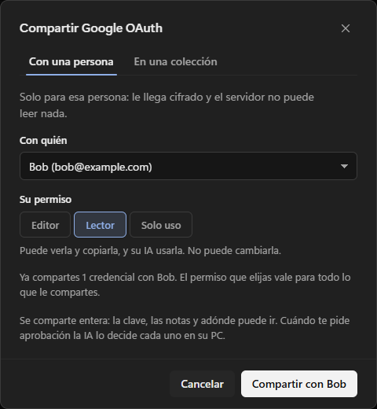

Gratuito y de código abierto. Para Windows, Ubuntu y macOS (vista previa).
Tus contraseñas y claves, usadas sin ser vistas.
SecretBroker es un gestor de contraseñas que vive en tu ordenador. Rellena tus accesos en el navegador y deja que los asistentes de IA usen tus API keys y tus accesos a servidores sin poder leerlos nunca.
Gratis y sin crear ninguna cuenta. Tu bóveda se queda en tu ordenador.




La idea
Tu IA pide. Tú haces un clic. Nunca ve la clave.
Cuando un agente de IA necesita una de tus claves, SecretBroker te enseña qué quiere hacer y adónde iría exactamente la clave. Al agente le llega la respuesta con todos los secretos borrados.
- Solo esta vezSolo para esta petición.
- Permitir 24 horasDeja de preguntarte por esa credencial mientras trabajas.
- DenegarO pausa la IA del todo, desde la app o desde el icono junto al reloj.
01 Para el día a día
Todas tus contraseñas en un sitio, y se rellenan solas.
Tú recuerdas una sola contraseña maestra. SecretBroker recuerda las demás, las rellena en la web correcta y te dice cuáles son débiles o se han filtrado.
¿Nunca has usado un gestor de contraseñas? Empieza aquí

Contraseñas y códigos 2FA juntos
Guarda un acceso una vez. El código de seis cifras de la verificación en dos pasos aparece a su lado, listo para copiar.
Se rellenan en tu navegador
Una extensión para Chrome, Edge, Brave y Firefox rellena el usuario, la contraseña y el código. Solo en la web donde los guardaste, así que una dirección parecida no recibe nada, y solo cuando tú lo pides.
Trae lo que ya tienes
Importa de Chrome, Edge, Firefox, Bitwarden, 1Password o KeePass. Ves la lista antes de guardar nada.
Copias de seguridad a tu manera
Una copia cifrada cada día en la carpeta que elijas. La restauras en un PC nuevo con tu contraseña maestra.
Un chequeo de salud
Una puntuación de 0 a 100 y lo que conviene arreglar primero: contraseñas débiles, repetidas, antiguas o filtradas, cada una con su botón para cambiarla.
Tus datos son tuyos
Exporta todo a un archivo cifrado, o a CSV o JSON sin cifrar para otro gestor. Nada se queda atrapado.
Más que contraseñas
Guarda tarjetas de pago, notas seguras, documentos de identidad, redes Wi-Fi, cuentas bancarias y licencias de software en la misma bóveda. Las herramientas de IA no pueden listar ni usar estos elementos personales. Qué puedes guardar.
A tu gusto
Elige tema claro, oscuro o el del sistema, siete paletas o tu propio color, cuatro tamaños de texto, filas compactas o cómodas y menos animaciones. Los ajustes de apariencia se aplican al elegirlos.
02 Para quien programa con IA
Que el agente trabaje. Las claves, contigo.
Los agentes de programación necesitan tus API keys para ser útiles, y todo lo que leen puede acabar en una transcripción. Con SecretBroker el agente pide una operación; la clave se añade dentro de un servicio aparte y se borra de todo lo que vuelve.
La guía para desarrolladores# guarda las claves y escribe un .secretbroker que puedes subir a git
$ sb import .env --delete
# tu app recibe sus variables directamente de la bóveda
$ sb run -- npm run dev
# .secretbroker: de dónde sale cada variable. Sin valores.
OPENAI_API_KEY = openai
DATABASE_URL = tienda-db:connection_url

Funciona con el agente que ya usas
Conecta Claude Code, Claude Desktop, Cursor, VS Code (Copilot), Windsurf o Codex con un clic. Habla MCP, así que otros clientes también pueden usarlo.
Aprobaciones que no agobian
Una petición por tarea, «Permitir 24 horas», un límite para los usos inusuales y, en cada credencial, la lista de los únicos dominios y programas a los que puede llegar su clave.
Los
.env, a la bóvedaEliges el archivo, marcas sus claves y listo.
sb importlo hace desde la terminal y no imprime nunca un valor, así que puede ejecutarlo tu agente.sb runArranca tus apps con los secretos sacados directamente de la bóveda. El archivo
.secretbrokersolo nombra credenciales, así que puede ir al repositorio.Rotar con ayuda
Dónde crear la clave nueva, una prueba con el proveedor antes de sustituir la actual, la lista de todos los sitios donde se usa y, al final, la comprobación de que la anterior ya no funciona.
Búsqueda de filtraciones, en tu equipo
Busca tus claves en conversaciones con IA, historiales de la terminal, archivos de configuración, carpetas de proyectos y su historial de git, y avisa si una clave que funcionaba deja de hacerlo.
03 Para equipos Vista previa
Comparte un acceso sin enviárselo a nadie.
Pásale una credencial a un compañero o ponla en una colección compartida: el panel del hosting de un cliente, la cuenta de fotos de stock del estudio, la base de datos de producción. Se cifra en tu ordenador antes de salir, y el servidor que hay en medio solo guarda lo que no puede leer.
La guía para equipos
Cifrado de extremo a extremo
El servidor no ve nunca un secreto, el nombre de una credencial ni el de una colección. Sí ve los correos, los nombres de las organizaciones y quién pertenece a qué.
Cuatro permisos
Gestor, Editor, Lector y Solo uso: su IA y sus programas pueden usar la clave, pero la app no la muestra ni la copia.
Vuestro servidor, con un comando
En un servidor Ubuntu, un comando lo deja listo con HTTPS, copia de seguridad cada noche y actualizaciones firmadas automáticas. Después se administra desde la app. También funciona con Docker.
Cuando alguien se va
Sus colecciones se vuelven a cifrar y cada credencial que pudo ver queda en una lista para que las cambies una tras otra.
Nadie se queda fuera para siempre
Cada cuenta de equipo tiene su código de recuperación, y los administradores pueden devolver el acceso a un compañero que lo ha perdido todo.
Habrá un servidor alojado
Usará el mismo código abierto que puedes alojar tú, y el servidor propio seguirá teniendo todas las funciones.
Cómo funciona con la IA
La clave va de la bóveda al servidor. Nunca pasa por la IA.
Los mismos cuatro pasos cada vez que un agente usa una credencial. Aquí, un agente lista tus incidencias abiertas en GitHub.
-
El agente nombra una credencial
Agente de IA
«Lista mis incidencias abiertas.»
http_request credential: github GET https://api.github.com/issues
Nombra la credencial. No tiene ninguna clave que enviar.
Servicio SecretBroker
Comprueba lo que permitiste para
github: solo HTTPS y soloapi.github.com. -
SecretBroker te pregunta
Servicio SecretBroker
Te pregunta, salvo que ya hayas permitido hoy esa credencial. Aprobar es un clic tuyo, no del agente.
Tú
Ves la petición y respondes con un clic.
-
La clave se añade dentro del servicio
Servicio SecretBroker
Saca la clave de la bóveda cifrada y la pone en la petición.
Authorization: Bearer
api.github.com
api.github.comrecibe una petición autenticada como cualquier otra. -
La respuesta vuelve limpia
api.github.com
Responde.
Servicio SecretBroker
Borra la clave de la respuesta si aparece en cualquier forma: tal cual, en base64, codificada en una URL o dentro de un JSON.
Agente de IA
Recibe el resultado.
200 OK [{ "title": "Arreglar login", … }] "token": "[REDACTED:github]"
Los comandos por SSH, los clientes de bases de datos y otros programas funcionan igual: el agente nombra una credencial y SecretBroker ejecuta la operación. Un límite que conviene conocer: un programa que permites con sb run o run_command recibe la clave en claro, así que permite solo los que necesites. Más sobre los límites.
Seguridad
Qué protege tus secretos, y hasta dónde llega.
Ningún gestor de contraseñas puede prometerlo todo. Esto es lo que hace SecretBroker, dicho claro, y lo que no puede hacer.
Lo que hace
- Cifrado en tu ordenador. La bóveda se cierra con una clave que sale de tu contraseña maestra (AES-256-GCM, scrypt). No se sube nada, salvo que te unas a un equipo.
- Un servicio aparte de tus programas. La parte que guarda tus secretos funciona con una cuenta propia del sistema. Los programas que usas, un agente de IA incluido, no pueden leer sus archivos, su memoria ni su código.
- La IA no recibe nunca un valor. Pide una operación. Las respuestas se limpian, y una clave solo va a los dominios HTTPS y a los programas que le pusiste en su lista.
- Tú decides cada uso. Una aprobación vale para una petición concreta y la confirmas tú: con Windows Hello, con una contraseña o, una vez desbloqueada la bóveda, con un clic.
- Solo se rellena en la web auténtica. La extensión ofrece un acceso solo en el dominio donde se guardó, nunca al cargar la página, y sin abrir ningún puerto de red.
- El servidor de equipos no puede leer lo que compartes. Va cifrado de extremo a extremo; las listas de miembros, los cambios y los borrados van firmados por quien los hizo.
- Las actualizaciones se verifican. La app solo instala una versión firmada con la clave de publicación del proyecto.
Lo que no hace
- Aún no tiene una auditoría independiente. El código es abierto y el modelo de amenazas está escrito, pero ninguna empresa de seguridad externa lo ha auditado.
- Tu escritorio es terreno compartido. Un programa malicioso en tu sesión puede leer el portapapeles, capturar teclas o mostrar ventanas falsas, como con cualquier gestor. Con «Abrir con mi sesión de Windows» activado, cualquier programa tuyo puede abrir también la bóveda.
- Los programas que permites reciben la clave. Lo que arrancas con
sb run, o dejas que la IA arranque conrun_command, la recibe en claro. - «Solo uso» es una cortesía, no un muro. Lo hace cumplir la app; un compañero con una app modificada podría sacar una clave que tiene permiso para usar.
- Los permisos de administrador anulan el aislamiento. No ejecutes nunca un agente de IA como administrador.
- Es joven. Los instaladores aún no llevan firma de código, la extensión aún no está en las tiendas, macOS es una vista previa y no hay app para móvil.
Descargar
Consigue SecretBroker
Gratis y sin crear ninguna cuenta. Se instala en un par de minutos y se actualiza con un clic.
Los instaladores aún no llevan firma de código, así que Windows y macOS muestran un aviso la primera vez. Qué vas a ver y por qué.
Ubuntu 22.04, 24.04 y 26.04
Paquete (.deb) para PC de 64 bits. Se instala con doble clic.
Descargar .debmacOS 12 o posterior, Apple silicon Vista previa
Paquete (.pkg) para M1 y posteriores. Lo compilan e instalan las pruebas automáticas; aún no se ha probado en un Mac real.
Descargar .pkgmacOS 12 o posterior, Intel Vista previa
Paquete (.pkg) para Mac con Intel. La misma vista previa.
Descargar .pkgTodavía no hay app para móvil. La extensión del navegador viene con la app y, por ahora, se carga desde su carpeta: aún no está en las tiendas de extensiones. Todas las versiones, con un archivo de firma junto a cada instalador, están en GitHub Releases.
Código abierto
Lee el código que guarda tus contraseñas.
SecretBroker tiene licencia MIT y se desarrolla a la vista de todos: la app de escritorio, la extensión del navegador, el servidor de equipos y el proceso que compila y firma los instaladores.
Preguntas
Antes de confiarle tus contraseñas
¿De verdad es gratis?
Sí. La app, la extensión y el servidor de equipos son gratuitos y de código abierto, con licencia MIT, y no creas ninguna cuenta con nosotros. Está previsto un servidor de equipos alojado para quien no quiera mantener el suyo; el servidor propio seguirá teniendo todas las funciones.
¿Dónde se guardan mis contraseñas?
En una bóveda cifrada en tu propio ordenador. No se suben a ningún sitio. Si te unes a un equipo, de tu PC solo sale lo que decides compartir, ya cifrado. La página de privacidad enumera todas las conexiones que hace la app.
¿Hace falta saber programar?
No. Se instala con doble clic, y las contraseñas, los códigos 2FA, el relleno en el navegador, la importación y las copias de seguridad no necesitan terminal. Lo de la IA y la línea de comandos está ahí si lo quieres.
¿Y si olvido la contraseña maestra?
En el ordenador donde está tu bóveda puedes entrar con Windows Hello o con la contraseña del sistema y elegir una nueva. Una copia de seguridad en otro ordenador solo se abre con la contraseña maestra que tenía, y nadie, tampoco el proyecto, puede recuperarla por ti. La guía lo explica con detalle.
¿Con qué herramientas de IA funciona?
La app conecta con un clic Claude Code, Claude Desktop, Cursor, VS Code (Copilot Chat en modo Agente), Windsurf y Codex. Es un servidor MCP, así que otros clientes MCP también pueden usarlo.
¿Está auditado?
No por una empresa de seguridad independiente; está en la hoja de ruta. El código fuente, el modelo de amenazas con sus límites conocidos y el proceso de publicación son públicos, y las vulnerabilidades se pueden comunicar en privado.
¿Por qué me avisa Windows al instalarlo?
Porque el instalador aún no está firmado con un certificado de firma de código. Windows muestra «Windows protegió su PC» con los programas de editores que no reconoce. La guía te dice dónde pulsar. Las actualizaciones que instala la propia app sí se comprueban con la clave de publicación del proyecto.
¿Funciona en Mac? ¿Y en el móvil?
La versión para Mac es una vista previa: la compilan e instalan las pruebas automáticas, pero aún no se ha probado en un Mac real, no está firmada y Touch ID llegará con la versión firmada. No hay app para móvil; una de solo lectura está en la hoja de ruta.
¿Puedo pasarme después a otro gestor?
Sí. Ajustes › Importar y exportar escribe un archivo cifrado para otro PC, o un CSV o JSON sin cifrar que leen Bitwarden, 1Password, KeePassXC y los navegadores.
¿En qué idiomas está?
La app, la extensión y el instalador están en 32 idiomas, entre ellos español, catalán, gallego y euskera. Sigue el idioma de tu sistema y se cambia en Ajustes › Apariencia › Idioma. La guía de esta web está en español y en inglés.